CROUTE
Route Coverage Testing For Autonomous Vehicles via Map Modeling
MAP MODELING
San Francisco
The map contains 84 valid junctions.
CROUTE extracts:
- 19 unique weak topology features
- 76 unique route features
and generates:
- 29 junction groups in total
- 22 junction groups selected for testing
The details of junction grouping are shown in table below.
Note that the san francisco map version is for Apollo 5.0.JUNCTION GROUP TOPOLOGY DIAGRAMS
ROUTE FEATURE DIAGRAMS
 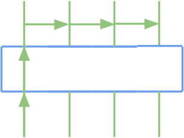
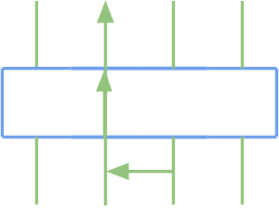
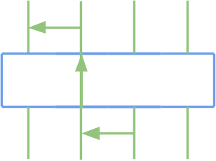
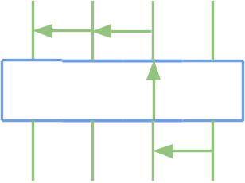
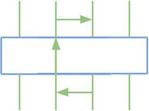
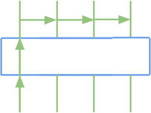
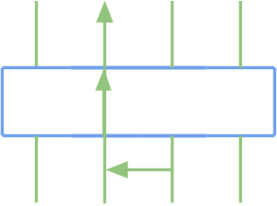
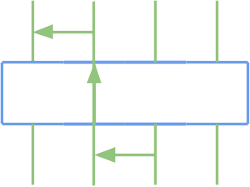
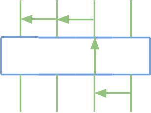
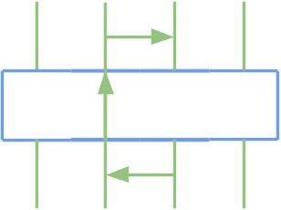
 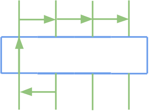
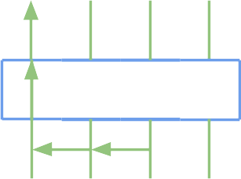
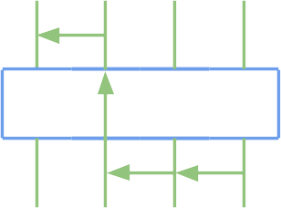
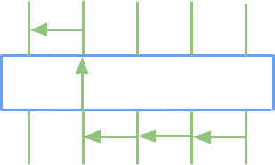
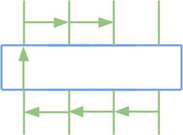
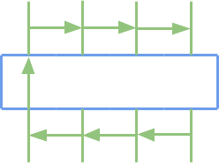
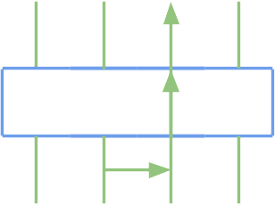
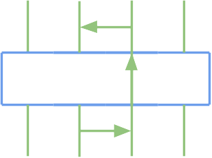
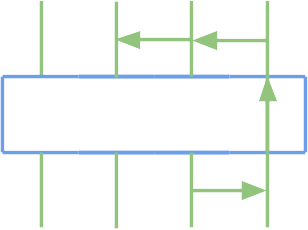
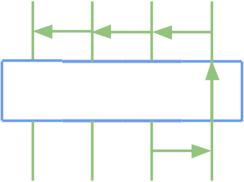
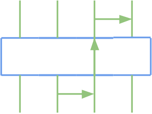
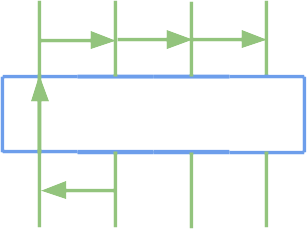
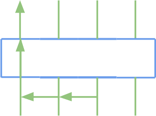
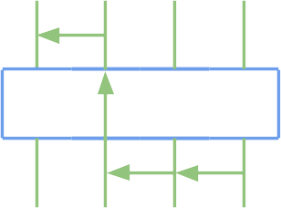
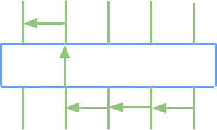
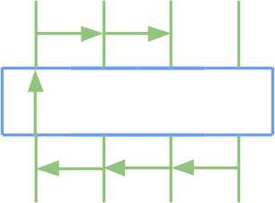
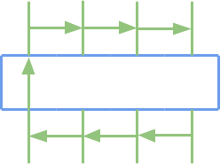
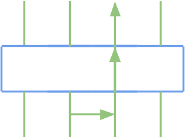
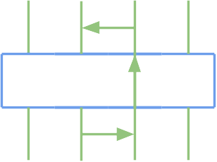
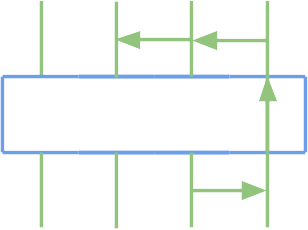
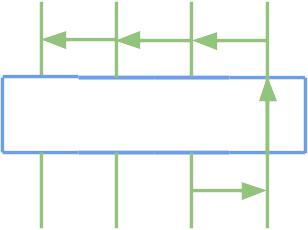
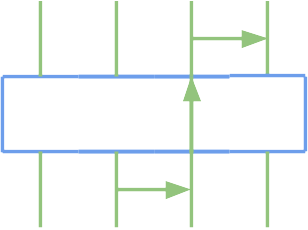
 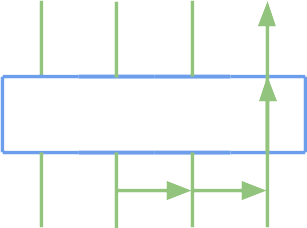
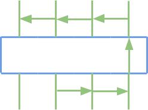
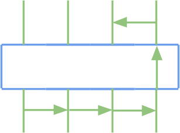
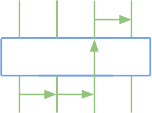
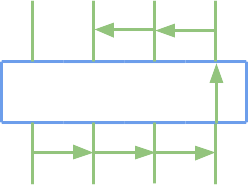
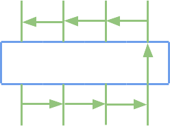
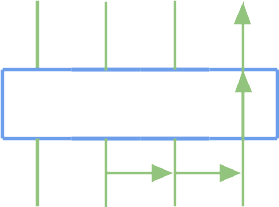
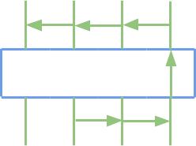
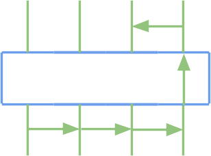
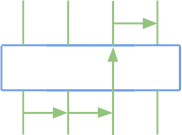
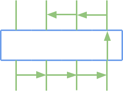
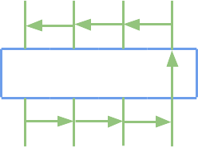
ISSUES DISCOVERED
Insufficient Distance for Continual Lane Changing
Apollo requires a long distance for lane changing (at least about 50 meters from our experimental discovery), which sometimes is too conservative, resulting in a big detour or even incompleteness of a motion task.
Inefficient Routing
The default configurations for Apollo’s routing algorithm (i.e., A*) prefer to avoid changing lanes before entering a junction even if there are sufficient distance for continual lane changing, resulting in a big detour without any lane changing.
Stuck Motion at Stop Signs
When Apollo passes a junction controlled by stop signs, it stops before the white stopping line and never moves again.
Insufficient Rerouting
When there are obstacles ahead, Apollo always performs overtaking, rather than executing lane changing and re-routing a new route. It will result in long-distance motion along the boundary of two adjacent lanes or lane changing in a junction.
Lane Gap
Apollo has a default configuration to define the maximal width of a lane. When a lane’s width is larger than this configuration, Apollo cannot recognize the actual width but increase the gap with the adjacent lane. Hence, Apollo can plan a feasible route but cannot perform a successful lane changing (e.g., terminating lane changing halfway and turning back to the original one).
Map Errors
Since the HD maps are constructed manually, different errors, such as location mismatch of curbs and disordered points forming a lane, are present.